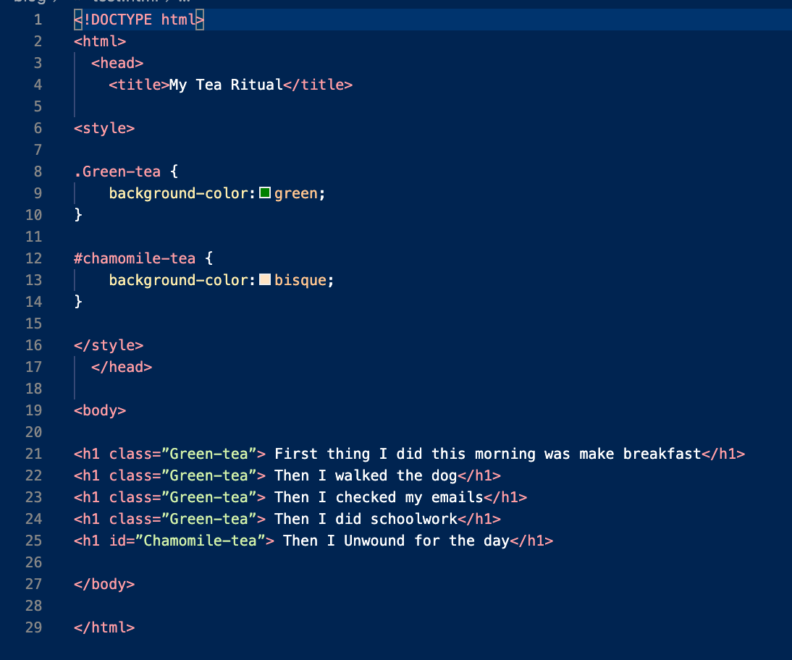

* Everything is a Learnable Skill *
The Difference A Cup Of Tea Can Make
Learn the concepts of #id and .class within CSS + HTML, without spilling your tea
11 February 2022
You cannot have too much tea, it really is not possible. My parents are english and drinking tea has always been a part of our lives "cuppa-tea lover?". This important and heavily traditional habit was installed in me from a young age. I know what you thinking, how could drinking tea have anything to do with coding? and in particular anything to do with ID and Class? Well lots, so keep reading...
Growing up, I used to drink Earl Gray but now I mostly just drink Green Tea. I drink it when I first get up and keep drinking it until about mid afternoon. Don't tea shame me, but I can get up to 10 pots brewed in one morning. I would say green tea is really fueling all my activity throughout the day. It is giving me a pep in my step and giving a day with a nice sunny hue (even when it is raining).
Okay, so what do I do after mid afternoon you ask? I generally only have 1 cup of tea and it is normally a herbal tea. Sometimes it is a peppermint, sometimes it is a chamomile and sometimes it is a herbal fusion (ooh fancy). However, I only drink 1 one of those each day. It is just a nice change from all the green tea and it really creates a point of difference in my day.
So now we get to the fun part. Imagine my day is HTML code. I am doing a few different activities within my day eg doing schoolwork, making breakfast, walking the dog, checking my emails and finally unwinding at the end of the day. Now each of those activities are what we would call an element in html. The first 4 elements are all elements in my day where I need that extra pep (eg a green tea). It is always the same green tea, green tea rolled into jasmine pearls, it is served in my favourite teapot and of course out of my favourite teacup (the one with a small chip in it). Then at the end of the day, when I want to unwind, I make 1 cup of herbal tea in a different cup. If I was to write this tea ritual in code, I would need to use class and id's.
Code Academy define class as: Classes are used to denote multiple elements that will receive the same styling.
Code Academy define id as: In contrast to classes, IDs are unique and can only apply to at most one element on the page.
So my green tea ritual that I have multiple times a day is a class whereas my 1 herbal tea would be an id. If I was to represent this ritual in code it would look something like the below. In my html I have listed the different activities as h1's (in coding world this stands for header 1). I have then added a class to the top 4 elements (activities) and added an id to the last element. The class I have defined as Green-tea, I have then given it the styling: background color green. The id I have defined as Chamomile-tea, I have then given it the styling: background colour bisque. When looking at this html in your browser, it would show the top 4 activities with a background of green. Whereas the last activity would have the background colour of bisque. Voila, just like magic you have learnt id's and classes.
So now you have learnt the basic concept, lets learn some rules around best practice when using class and id. Jens Oliver Meiert, an engineering manager and author, suggests the below in this article. His focus is less is more, to ensure that your maintenance of a site is reduced and your code is easy for others to collaborate with. Thanks Jens 😊
- Keep Use of IDs and Classes to a Minimum He states that overall you should keep your use of id and class to a minimum. It it can become a maintenance burden as you keep developing your code. (he does state ID's can freely be used if they are being used for something beyond styling eg internal link targets)
- Use Functional ID and Class Names He believes naming your class or id based on it's functionality is best practice. As it helps with collaboration. Avoid anything that is to do with the layout eg red, left.
- Use Generic ID and Class Names He also states that if you are having problems naming the elements function, the second best option is to give it a generic "neutral" name.
- Use Names That Are as Short as Possible But as Long as Necessary Lastly, getting to the point as succinct as possible is ideal but don't sacrifice on necessary detail.
While we have talked a lot about tea, I hope that you have been able to learn the concepts of id and class. I also hope that this post has made you believe that... Everything is a Learnable Skill..
Everything is a learnable skill is my virtual journey through the weird and wonderful world of coding, click here to see more posts
| *LinkedIn* | *Twitter* | *Email* |
|---|---|---|